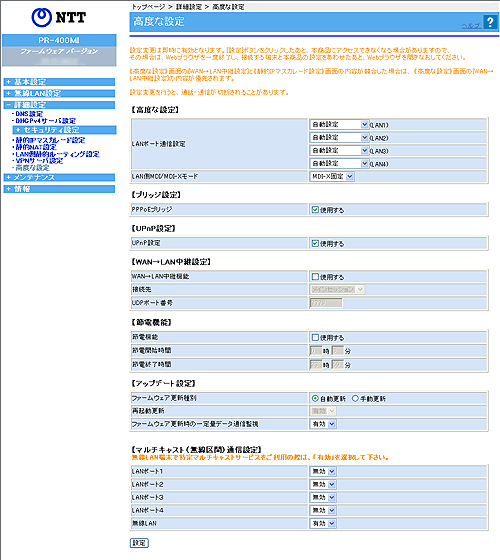

| 高度な設定を行います。 |
| 設定変更は即時に有効となります。［設定］をクリックしたあと、本商品にアクセスできなくなる場合がありますので、その場合は、Webブラウザを一度終了し、接続する端末と本商品の設定をあわせたあと、Webブラウザを開きなおしてください。 |
| ※「Web設定」画面に表示されているボタンについての説明は こちら |
|  （画面は、フレッツ 光ネクストの場合の設定内容です。) |
 |
LANポート通信設定（LAN1〜LAN4） (初期値：自動設定) |
| LANポート通信を「自動設定、100Mbps 全二重、100Mbps 半二重、10Mbps 全二重、10Mbps
半二重」から選択します。 通常は自動設定で使用します。
|
|
LAN側MDI/MDI-Xモード (初期値：MDI-X固定) |
| LANポートのMDI-Xを固定するか、自動切り替えにするかを選択します。 設定単位は、4ポート一括です。設定するとポート1〜ポート4のすべてのポートが同じ動作となります。 |
|
|
| PPPoEブリッジ (初期値：使用する) | |
|
PPPoEブリッジを使用する場合は、「使用する」にチェックしてください。 |
|
| IPv6ブリッジ（有線LAN） (初期値：使用する) | |
|
有線でIPv6ブリッジを使用する場合は、「使用する」にチェックしてください。 |
|
| IPv6ブリッジ（無線LAN） (初期値：使用する) | |
|
無線でIPv6ブリッジを使用する場合は、「使用する」にチェックしてください。 |
| UPnP設定 (初期値：使用する) |
|
| UPnPを使用する場合は、「使用する」にチェックしてください。 本商品のUPnPが有効になります。 「Windows Live(R) Messenger」などUPnPが必須のサービスやアプリケーションを利用できます。 また、UPnPで「Windows Live(R) Messenger」などを使用する場合は、パソコンの設定も必要です。 これらについて詳細は、機能一覧の「UPnP」を参照してください。 ［情報］-［UPnP CPテーブル］を選択すると、現在接続されているUPnPのパソコンのIPアドレスとMACアドレスを表示します。 |
|
|
| ［WAN→LAN中継機能］ | |||||||||||||||||||||||||||||||||||||||||||||||||||||||||||||||||||||||||||||||||||||||||||||||||||||||||||||||||
|
|||||||||||||||||||||||||||||||||||||||||||||||||||||||||||||||||||||||||||||||||||||||||||||||||||||||||||||||||
| |||||||||||||||||||||||||||||||||||||||||||||||||||||||||||||||||||||||||||||||||||||||||||||||||||||||||||||||||